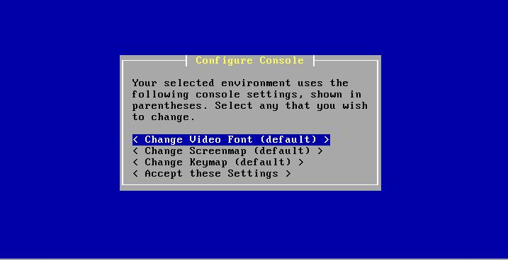
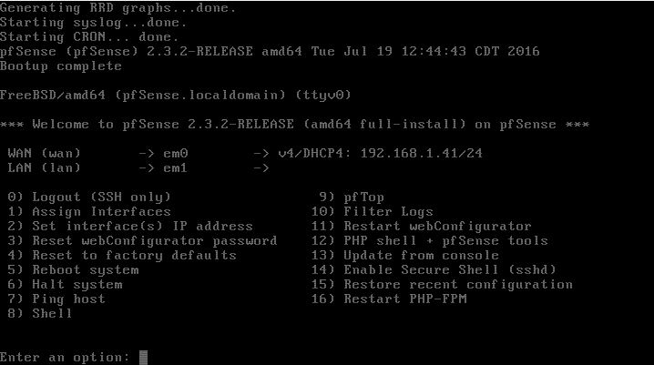
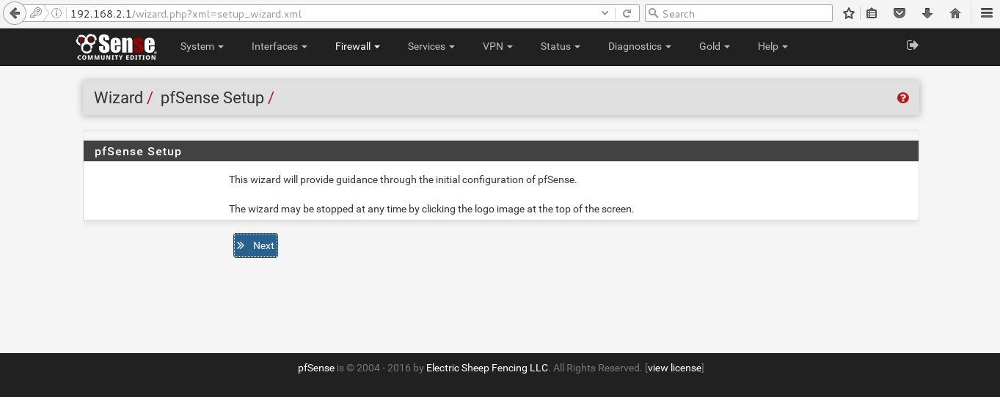

I like to keep a small virtual lab on my laptop so I can play
around with it when time permits. For this tutorial you will
need:
Part 1 will be covering setting up pfSense to use as a router
for your internal network.
Part 2 will cover
installing Kali and Metasploitable
Part 3 will cover provisioning a PXE Boot Server
Part 4 will cover setting up Snort and Wireshark to look at
your new network
Start by installing VirtualBox if you don't have it
already. Click "New" to provision a new VM. Name it
something sensible (like pfSense - router) that identifies
it. The type is BSD and the version
pfSense is based on is FreeBSD (64-bit). It doesn't need
much memory so give it only 256 MB. You can get away with
a small .vdi as well so give it 1 GB and click "Create".
Select the VM and click "Settings". Go to the Network
settings. For Adapter 1, I changed it to use the Bridged
Network (this makes some set up options easier, like the default
gateway and DNS settings). Enable Adapter 2, and choose
Internal Network (change the name if you want but I left it as
the default "intnet"). This is all the settings we need to
change to click "OK" then head to the top menu and click
"Start".
Browse to you pfSense iso and select it. Let it autoboot
until you reach this screen.

These defaults should work so scroll down to "Accept these
Settings" and hit Enter.
We will use the Quick/Easy Install for this tutorial so hit
Enter again. Then hit Enter again (This is a new virtual
HDD so we don't care that it's going to erase all data).
During installation, you can choose to install a custom
kernel. While a pretty cool feature, it's not necessary
for us, so hit Enter to select "Standard Kernel". When
installation is finished it will let you know it needs to
reboot, so hit Enter again (which seems to be the majority of
the tutorial, trust me keep reading because the hard[er] stuff
is coming).
Before it reboots you need to click the
disk icon at the bottom of the VM's screen to unmount the
.iso. If you forget to do this then click the red X
and power off the VM, go to Settings -> Storage ->
Right-click on the .iso and remove it. The OS is
already installed on the virtual HDD but it is a higher
priority in the boot order so it will try to reinstall
pfSense if you do not do this.
When you get to this screen you're ready to continue.

As you can see the WAN interface got the IP
address 192.168.1.41 from DHCP on my router. This
interface is what will allow your virtual network to access
the internet for things like updates. But the LAN has
not been automatically set up, so enter option 2 to
configure a static IP address of your virtual network's
gateway. Then select the number for the LAN
option. I used these options for my virtual network.
LAN IPv4 address
|
192.168.2.1
|
LAN IPv4 subnet bit count
|
24
|
LAN IPv4 upstream gateway
address
|
None
|
LAN IPV6 address
|
None
|
Enable DHCP server on
LAN?
|
y
|
IPv4 client address range
|
192.168.2.31 -
192.168.2.254
|
Revert to HTTP as
webConfigurator protocol?
|
y
|
You can keep it running now and check out the menu if you
want. I prefer to shut it down with option 5 and restart
it headless. Then I'll start up a new VM with a web
browser to finish configuration. So I'll make a CentOS 7
VM and give it 768 MB and a 2 GB .vdi.
When you have the VM up and running open up Firefox and browse
to http://192.168.2.1 (or whatever you set your IPv4 address
as). The username is
admin and the password is
pfsense
by default. You will want to change the password after the
set-up wizard.

Click Next to start the wizard and on the next page. The
next screen is the General Settings, so here are my settings:
Hostname
|
fw1
|
Domain
|
harvey.virtnet
|
Primary DNS Server
|
192.168.2.1 (The pfSense box)
|
Secondary DNS Server
|
192.168.1.1 (The gateway for
the bridged WAN)
|
Override DNS
|
No
|
The time server information was correct to I just kept the
defaults. Similarly, WAN is already configured correctly,
so we can skip the next page also. LAN is also correctly
configured, but if you want to make any changes to it now would
be the time. When done click Next. Set your new
admin password and reload the configuration.
So now you're in the dashboard and everything looks good
right? But you open a new tab and go to google.com and get
nothing. So what is the next step? DNS. It's
almost always DNS. To confirm you can ping 8.8.8.8, but
not google.com. Go to Services -> DNS Resolver and
unselect Enable DNS Resolver. Then go to Services ->
DNS Forwarder. You can check by running an nslookup on
fw1.
This is the end of part 1. Next part we will be getting
Kali and Metasploitable set up on your virtual network.